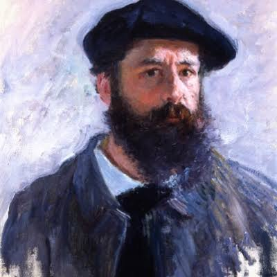

PINTURA
La pintura
Francia fue uno de los grandes centros del impresionismo, movimiento que buscaba representar la luz y los momentos cotidianos. Entre sus artistas se destacan Claude Monet, Edgar Degas y Pierre-Auguste Renoir.
Una mirada a las costumbres, las tradiciones y el arte de Francia.

Francia tiene una cultura reconocida en todo el mundo, formada a lo largo de muchos siglos. Su idioma oficial es el francés y sus costumbres combinan tradiciones antiguas con formas de vida modernas.
La vida cultural francesa le da importancia a los encuentros, los cafés, los mercados, la moda, la literatura y la gastronomía. También se celebran fechas importantes, como el 14 de julio, Día Nacional de Francia, que recuerda la toma de la Bastilla y se festeja con actos, desfiles y fuegos artificiales.
En distintas regiones existen tradiciones, fiestas y comidas propias, por eso la cultura francesa no es igual en todo el país: cada zona aporta algo especial a su identidad.
Francia tuvo un papel muy importante en la historia del arte. Sus artistas, escritores, músicos, arquitectos y cineastas crearon obras que hoy se conocen internacionalmente. El arte se puede encontrar en sus museos, edificios, teatros, calles y espacios públicos.

Francia fue uno de los grandes centros del impresionismo, movimiento que buscaba representar la luz y los momentos cotidianos. Entre sus artistas se destacan Claude Monet, Edgar Degas y Pierre-Auguste Renoir.

Las esculturas forman parte de plazas, jardines y museos franceses. Auguste Rodin es uno de sus escultores más reconocidos, autor de obras como El pensador.

El Museo del Louvre y el Museo de Orsay conservan obras fundamentales. También son importantes sus monumentos, palacios, iglesias y edificios históricos.

La literatura francesa cuenta con autores destacados como Victor Hugo, Jules Verne y Molière, cuyas obras siguen leyéndose y representándose.

Francia tiene una tradición musical diversa: desde la música clásica y la chanson française hasta estilos modernos que forman parte de su escena actual.

Francia es una referencia en la historia del cine y también en el mundo de la moda. París es sede de importantes desfiles y casas de diseño.
Conocer Francia también significa acercarse a sus formas de vivir, sus celebraciones y sus expresiones artísticas. Por eso, además de visitar sus monumentos, me gustaría descubrir sus museos, barrios, espectáculos y espacios culturales.
Seguir explorando ↗